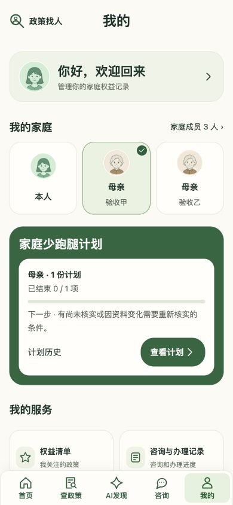
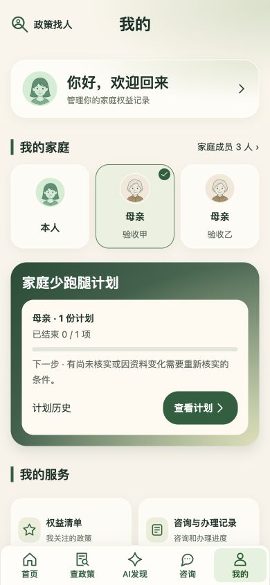
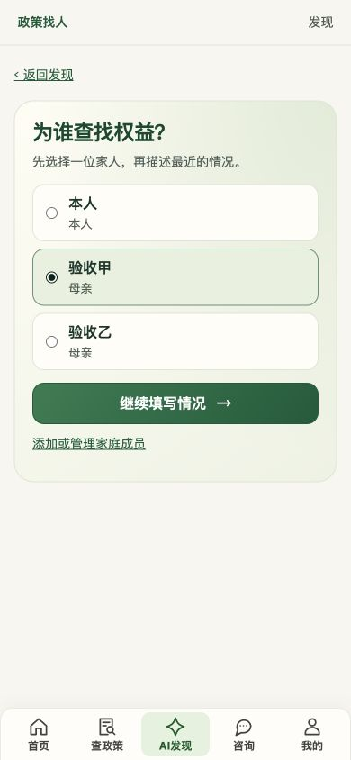
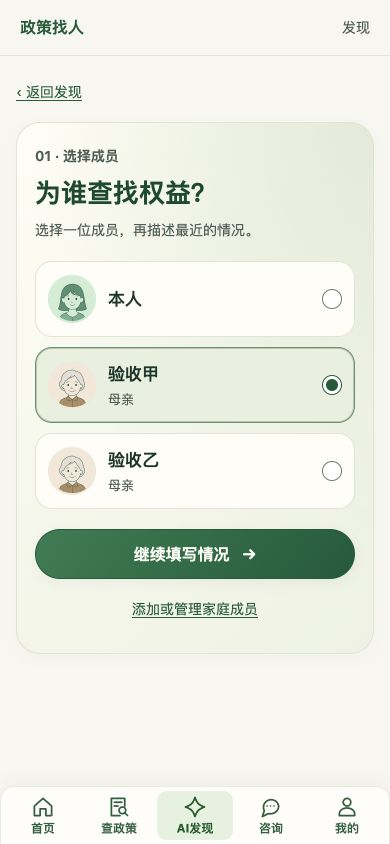
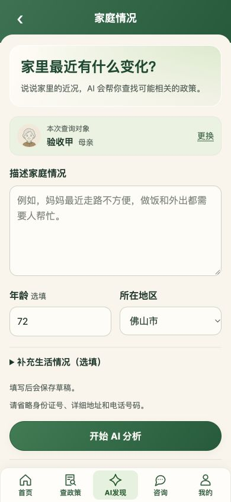
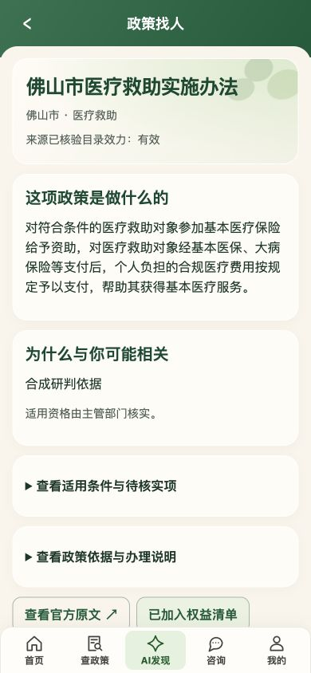
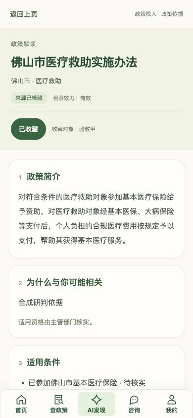
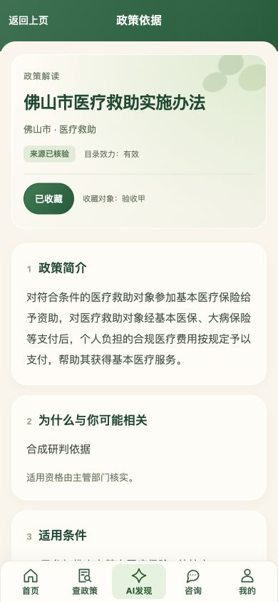

政策找人 · 恢复原版视觉细节
保留原有渐变、背景和花纹，延续已经改善的排版与操作。以下使用同一组本地合成验收数据。
AI 推荐结果
恢复原版渐变、叶片纹样和绿色边框，保留明确的选中反馈。


我的服务
恢复暖色背景、光晕与渐变计划卡，保留完整服务入口。



成员选择
恢复浅绿渐变与暖白卡片，保留头像和原生单选。



情况填写
恢复渐变顶栏和主按钮，保留清晰的查询对象。



AI 政策详情
恢复原有配色、叶片和宽度，保留独立收藏区与完整正文。



查询历史
去掉右上角小字，保留记录层级与删除二次确认。